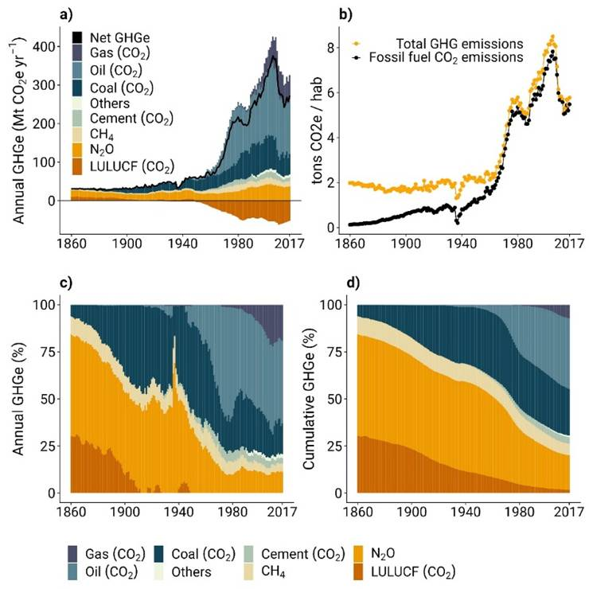

Emisiones históricas en España. Un balance general
2 de septiembre de 2025

España ha experimentado una profunda transformación en su perfil de emisiones a lo largo del último siglo y medio. Desde las primeras etapas de industrialización a finales del siglo XIX, cuando las emisiones de gases de efecto invernadero eran relativamente modestas y estaban vinculadas principalmente a la quema de carbón en la industria siderúrgica y el transporte ferroviario, hasta la explosión del consumo energético asociada al desarrollismo de las décadas de 1960 y 1970, la trayectoria española revela patrones comunes a otros países del sur de Europa, aunque con particularidades propias ligadas a su estructura productiva y a su dotación de recursos naturales.
A partir de la década de 1980, la incorporación de España a la Comunidad Económica Europea y la posterior liberalización económica impulsaron un crecimiento sostenido de las emisiones, especialmente en los sectores del transporte y la construcción. El boom inmobiliario de finales de los años noventa y principios de los dos mil elevó las emisiones a máximos históricos, situando a España entre los países europeos con mayor crecimiento relativo de gases de efecto invernadero respecto a los niveles de 1990. La crisis financiera de 2008 supuso un punto de inflexión, con una reducción notable de las emisiones que, sin embargo, estuvo más vinculada a la contracción económica que a una verdadera descarbonización estructural.
En la última década, los datos muestran una tendencia moderadamente descendente de las emisiones totales, apoyada en el despliegue de energías renovables, el cierre progresivo de centrales térmicas de carbón y mejoras en la eficiencia energética del parque edificatorio y el sector industrial. No obstante, el análisis de largo plazo revela que la intensidad de emisiones por unidad de PIB, aunque decreciente, sigue siendo elevada en comparación con la media de la Unión Europea, lo que sugiere que el camino hacia la neutralidad climática requerirá transformaciones más profundas en el sistema productivo, el modelo de movilidad y los patrones de consumo del conjunto de la sociedad española.